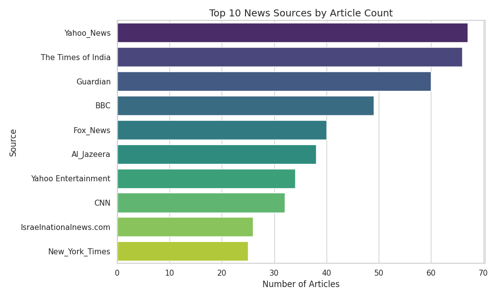
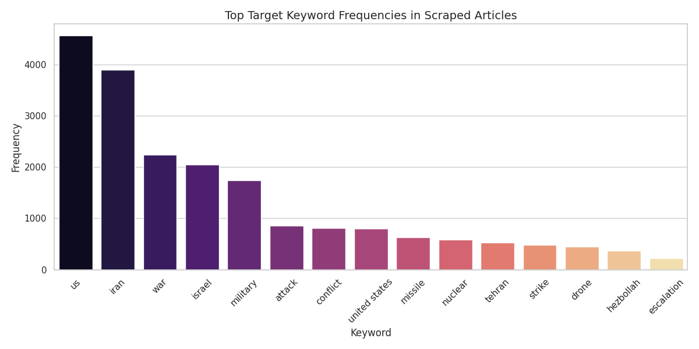
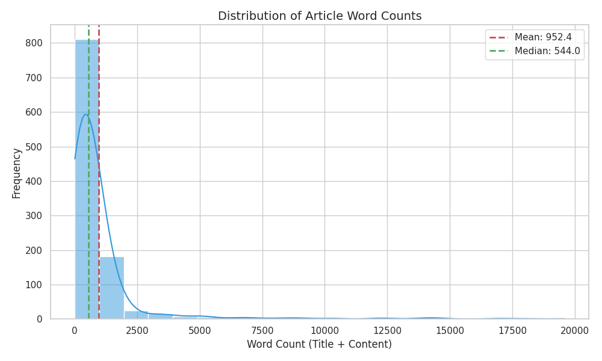
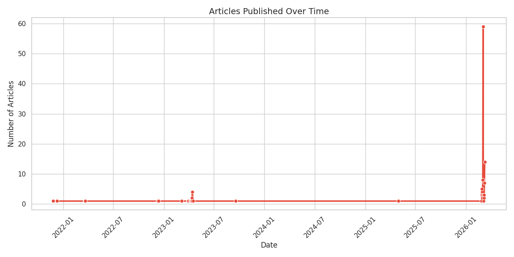
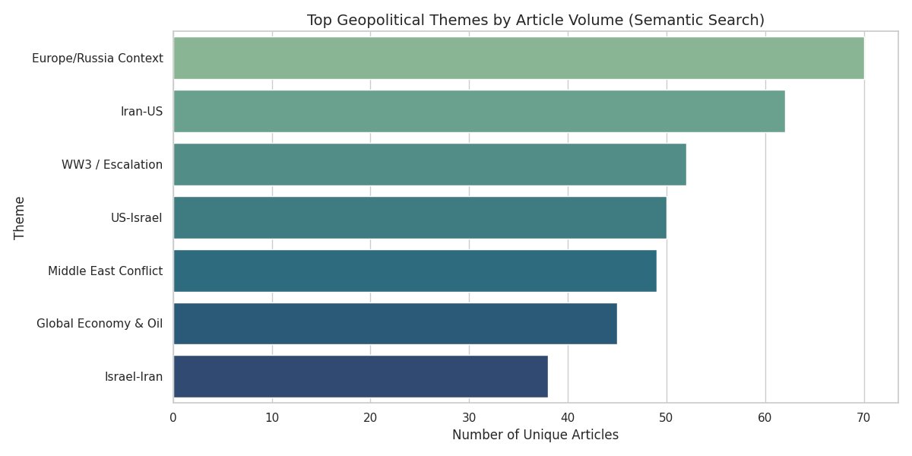
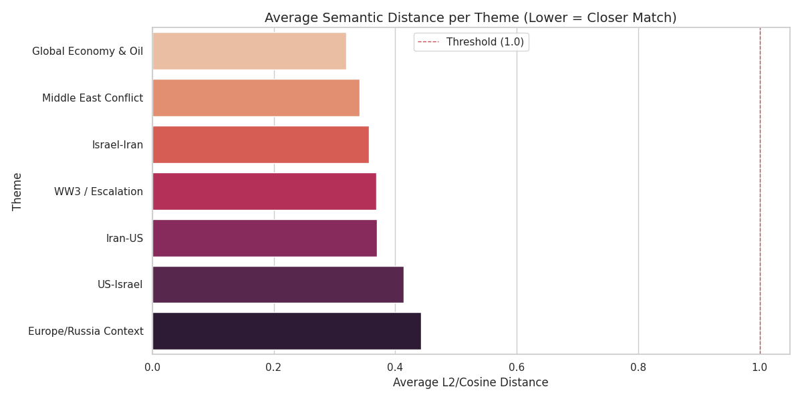

Automated Exploratory Data Analysis Report
Generated: 2026-03-10 14:59:42

| Source | Article Count |
|---|---|
| Yahoo_News | 67 |
| The Times of India | 66 |
| Guardian | 60 |
| BBC | 49 |
| Fox_News | 40 |
| Al_Jazeera | 38 |
| Yahoo Entertainment | 34 |
| CNN | 32 |
| Israelnationalnews.com | 26 |
| New_York_Times | 25 |
Occurrences of predefined high-risk context keywords across all text.

Histogram of article word lengths (Title + Content).

Timeline of publication dates scraped across sources.

Articles were chunked and embedded via nomic-embed-text. The charts below represent semantic vector distance queries against key geopolitical themes.
Threshold Filter: L2/Cosine Distance <= 1.0

Lower Distance = Closer Semantic Match to Query Vectors
